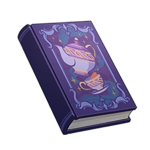

Fontaine · Books & Literature
The Feline Firm
This eight-volume comic fantasy follows doorman Perroux after a hidden agency of talking cats recruits him to help stage a wedding and escape with its longhaired feline guest.

A Cat-Sized Detective Agency
The Feline Firm is an eight-volume comic fantasy. The story begins when the doorman Perroux receives a golden invitation from an agency run by talking cats. The firm takes on problems troubling the city’s feline community, and Perroux’s familiarity with the city and its strays makes him useful to its members.
The books are found in the Theater Prep Room beneath the Knights of Favonius Library in Mondstadt. The story’s names and social setting suggest Fontaine, but the volumes do not explicitly state their fictional setting; that regional label is therefore an editorial classification, not an in-text fact.
Volumes I–III: Perroux Meets the Firm
Perroux deciphers the cats’ directions and finds their hidden office beneath a carriage. The tabby Boss Cat introduces the Firm and its members, who recount their clever and sometimes self-serving solutions to feline clients’ problems. Their stories establish the book’s playful tone and the gap between the cats’ grand presentation of their work and what they actually did.
Volumes IV–VI: A Wedding Scheme
The Firm asks Perroux for help with the white longhair treasured by his employer, Master Baron. Its plan uses magical boots and a mask, a fabricated invitation from Lady von Frigga, and a staged celebration to bring the Master and the cats together. Perroux is drawn into the cats’ effort to unite the tabby Boss and the longhair, while the Master thinks he has been invited to an elegant social event.
The narrative is a farcical caper, not evidence about real cats, magic, or Fontaine’s history.
Volumes VII–VIII: Perroux’s Catlike Escape
During the escape, the boots and mask turn Perroux into a cat. He helps the tabby and longhair reach a boat and leaves the Master behind, then wakes as a human and discovers the magical objects have disappeared. The cats and their hidden office are gone as well.
The final volume gives the Master a comic recovery and reveals a letter from the cats, written as if the longhair had sent it. It says she is safe and hints that Lady von Frigga truly has feelings for the Master. Perroux never finds the Firm again, leaving the magic and the cats’ fate within the story’s whimsical frame.
Reading the Collection
The eight volumes form one continuous tale, from Perroux’s invitation through the failed search for the vanished Firm. The cat agency’s methods mix affection, deception, and elaborate theatrical tricks; the book plays with those contradictions rather than offering a reliable account of any real organization.
This is an original CoreGG reading guide, not an official HoYoverse article or a reproduction of the game text. Source links below identify the records used so you can check the original context.
Sources & references
Check these sources for the original game text and reference trail.